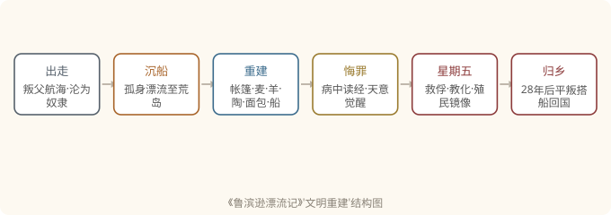

鲁滨逊漂流记
一、基本信息
| 作者 | 丹尼尔·笛福 |
|---|---|
| 成书/出版 | 1719年4月出版（Britannica 系1719—22含续集） Daniel Defoe — Encyclopaedia Britannica (by Reginald P.C. Mutter)（百科全书） |
| 国别/地区 | 英国 |
| 时代 | 近代 · 18世纪 |
| 体裁 | 长篇小说（荒岛冒险/纪实体） |
| 语言 | 英语 |

二、创作背景
出版（Britannica）：1719年出版（Britannica 引作 'Robinson Crusoe (1719–22)'，含同年续集《鲁滨逊续记》），一出即流行——'Quickly became popular upon publication; influenced later books and films (Robinsonade tradition)'（'鲁滨逊漂流文学'成为一个体裁专名）。
原型：苏格兰水手亚历山大·塞尔柯克（Alexander Selkirk）在胡安·费尔南德斯群岛独居四年余的真实事件（Britannica：the character is partly linked to the real castaway Alexander Selkirk）。
文学史地位：笛福被称为'英国小说之父'（Britannica 记此称并注明'是否为统一长篇'之争）——本作是英语'写实小说'（realism，Britannica 标注）最早的成功样本之一。
三、内容脉络
出逃与沉船：约克郡商人之子鲁滨逊不听父劝执意航海，几经风浪沦为摩尔人奴隶又逃脱，成为巴西种植园主；再航非洲购奴途中沉船——孤身漂至无人的荒岛（Britannica：Crusoe is shipwrecked and must survive alone on an island...remains there for many years）。
重建文明：从破船上搬运工具枪弹，搭帐篷、筑栅栏、种大麦（意外发芽）、驯山羊、制陶、做面包、造独木舟——用'日记体'逐日记录（通说）；病中读圣经'悔罪'，宗教觉醒（通说）。
星期五：第24年发现食人族脚印；救下将被吃掉的俘虏，命名'星期五'（Britannica：He rescues a captive, whom he names Friday），教其英语与基督教——'文明/野蛮'与殖民叙事的核心关系（通说解读，现代批评重点）。
结局：28年后英国船叛变靠岸，鲁滨逊助船长平叛，搭船回国——发现巴西种植园收益早已累积成巨富；续记再游荒岛（Britannica）。
四、主要人物表
| 人物 | 身份 | 说明 |
|---|---|---|
| 鲁滨逊·克鲁索 | 商人之子·水手·岛民 | '经济人'原型：清点、记账、储蓄、投资——把文明随身携带的个体（通说解读） |
| 星期五 | 被救土著 | 忠仆与'被文明化者'——种族与殖民议题的争议焦点（Britannica：engages with themes of ambition, self-reliance, race, religion, and colonization） |
| 父亲 | 中产家长 | '中产阶级生活最好'的劝告——被鲁滨逊一生的颠簸反复验证（通说） |
| 食人族 | 岛民威胁 | 欧洲人对'他者'的想象投射（通说解读） |
五、主题与艺术特点
- 自我重建的史诗：以一人之力复刻文明的全部工艺——'劳动创造人'的寓言（通说）。
- 宗教与天意：从叛父出走到荒岛悔罪——清教天意观的叙事化（通说）。
- 殖民的镜像：荒岛即殖民地的模型（命名、圈地、'教化'土著）——20世纪后殖民批评（笛福与殖民主义——通说待核）。
- 艺术特点：伪纪实（日记/账目）、具体到荒谬的细节清单、第一人称经验主义。
六、影响与评论
- Britannica（Defoe 条目）：'Quickly became popular upon publication; influenced later books and films'——'Robinsonade'（鲁滨逊式故事）成为体裁专名。
Daniel Defoe — Encyclopaedia Britannica (by Reginald P.C. Mutter)（百科全书） - Britannica：笛福被称为'英国小说之父'但'first novel'归属在批评界有讨论——本作处于该争论的中心。
Daniel Defoe — Encyclopaedia Britannica (by Reginald P.C. Mutter)（百科全书） - 哲学回响：卢梭《爱弥儿》唯一推荐小说（通说待核）；韦伯与新教伦理研究的引证（通说待核）。
Daniel Defoe — Encyclopaedia Britannica (by Reginald P.C. Mutter)（百科全书） - 跨媒介：电影、漫画（《芒星》等）与'荒岛生存'游戏的源头（通说待核）。
Daniel Defoe — Encyclopaedia Britannica (by Reginald P.C. Mutter)（百科全书）
七、阅读建议
- 中段'重建工艺'清单极详（制陶、烤面包各一章）——这正是主题，不可当作冗笔跳过。
- 宗教段落（悔罪与天意）需要清教背景注释。
- 星期五的关系（师徒/主仆）应以殖民批评视角双重阅读。
- 徐霞村译《鲁滨逊漂流记》（人民文学出版社）：通行译本。
- 郭建中译本（译林出版社）：另一选择。
- 英文本：Oxford World's Classics（含 Selkirk 附录，通说待核）。
通读 → 精读'账目两栏'（善/恶对照表）与'脚印'一章 → 对照塞尔柯克真实事件 → 讨论'星期五'的命名权问题。
八、待核实
- 首版日期（1719年4月25日 Taylor 书局说，通说）待核。
- 塞尔柯克事件（1704—09）的航海记录细节待核。
- 徐霞村/郭建中译本出版信息待核。
- '28年2个月19天'（原著表述）的逐字核对待完成。
本页主要来源
丹尼尔·笛福的其他收录作品：摩尔·弗兰德斯